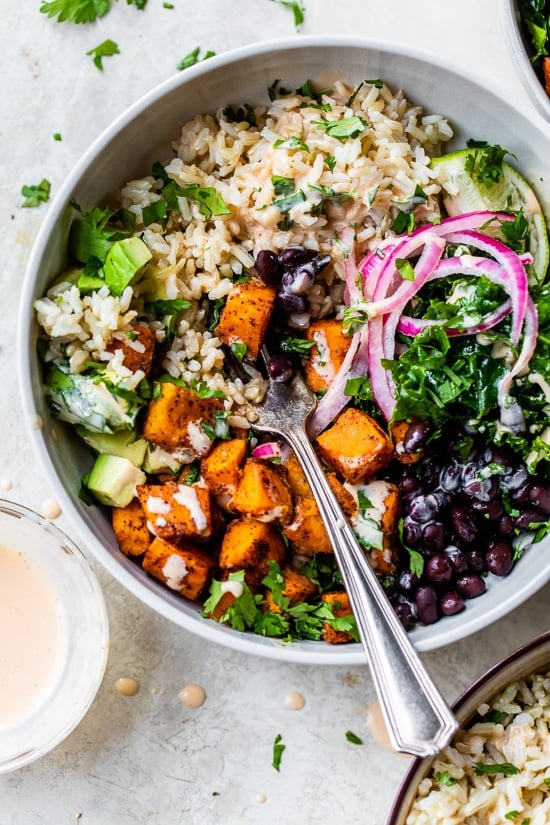

Sweet potato and black bean bowl

Description
Here's a High-Protein Sweet Potato & Black Bean Bowl that's packed with plant-based protein, fiber, and plenty of nutrients. This hearty bowl is perfect for a post-workout meal, a filling lunch, or dinner.
Ingredients
- 1 large sweet potato, peeled and diced
- 1 can (15 oz) black beans, drained and rinsed
- 1 tablespoon olive oil
- 1 teaspoon chili powder
- 1/2 teaspoon cumin
- 1/2 teaspoon garlic powder
- Salt and pepper, to taste
- 1 tablespoon lime juice
- 1/2 cup corn kernels (fresh, frozen, or canned)
- 1/4 cup diced red onion (optional)
- 1/2 avocado, sliced
- Fresh cilantro, for garnish
- Optional toppings: Salsa, Greek yogurt, sour cream, or shredded cheese
Steps
- Roast the Sweet Potatoes:
- Preheat your oven to 400°F (200°C).
- In a bowl, toss the diced sweet potatoes with olive oil, chili powder, cumin, garlic powder, salt, and pepper.
- Spread the sweet potatoes on a baking sheet in an even layer.
- Roast for 20-25 minutes, flipping halfway through, until tender and slightly crispy on the edges.
- Prepare the Black Beans:
- While the sweet potatoes are roasting, heat a small skillet over medium heat.
- Add the black beans and cook for 3-4 minutes, stirring occasionally, until they are heated through. You can also season them with a pinch of salt, pepper, and a squeeze of lime juice for extra flavor.
- Cook the Corn:
- If you're using fresh or frozen corn, cook it according to package instructions or sauté in a pan with a small amount of oil for 3-4 minutes until warmed through.
- Assemble the Bowl:
- Start with a base of roasted sweet potatoes in a bowl.
- Add black beans, corn, and any other toppings like diced red onion, avocado slices, or fresh cilantro.
- Finish and Serve:
- Drizzle with a bit of lime juice or your favorite dressing (such as a cilantro-lime dressing or a simple vinaigrette).
- Add any extra toppings you prefer, such as salsa, Greek yogurt, or shredded cheese.
Back to main site